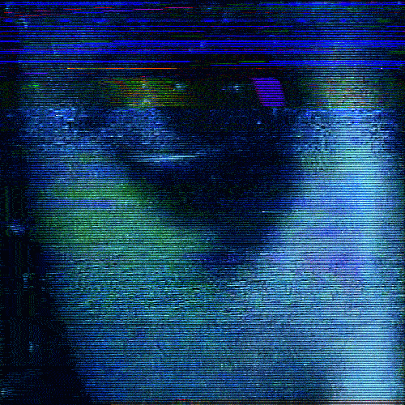

Le Stéréotype du Hacker
Le pirate informatique est souvent peint de manière approximative et stéréotypée. Il se caractérise généralement par un comportement asocial , voire autiste. Le hackeur des années 1970 est le nolife par excellence.

Le cliché le plus tenace chez les hackeurs made in Hollywood est sans doute la facilité déconcertante avec laquelle ils pénètrent dans des systèmes ou accèdent à des données confidentielles sans que l’on sache trop comment. Le hacker c’est un peu le savant fou des temps mordernes.
Néanmoins, la figure du hackeur évolut, dans les années 1990, le hackeur connaît un pic de popularité, soutenu par la démocratisation de l'informatique et d'Internet, mais aussi par l'actualité : des arrestations spectaculaires ont lieu aux Etats-Unis, et en Europe, le Chaos Computer Club fait plusieurs fois les gros titres.
Les hackeurs fascinent de plus en plus le grand public, et donc les réalisateurs de films et de séries. Se met en place un système d'opposition entre bon et méchant hackeur.
Get ready to
be hacked!

Et la Hackeuse dans tout ça ?
Dans les années 2000, le hackeur se détache de l'adolescent. Il vieillit, occupe un travail, souvent dans l'informatique.
La figure du hackeur, généralement un homme blanc hétérosexuel, va aussi se diversifier, avec l'apparition de personnages féminins forts. Lisbeth Salander, héroïne de la trilogie suédoise Millénium, marque un tournant. Même s'il ne s'agit pas de la première hackeuse du cinéma, elle casse les clichés qui y sont habituellement associés.
Cependant les rares personnages féminins qu'on peut voir répondent souvent aux clichés sexistes encore trop courants dans l'industrie cinématographique.
Fascinante Hackeuse
La hackeuse fait fantasmer. C'est une femme mystérieuse, un peu sauvage, souvent engagée, elle est débrouillarde, intelligente, généralement à forte personnalité, elle est intimidante.
La hackeuse est une femme à part, un oiseau rare, elle est la plus part du temps seule entourée d’hommes.
Malheureusement, les clichés ont la vie dure. La hackeuse est encore peu représentée au cinéma et quand elle est, elle est souvent sexualisée et objectifiée.
Toutefois, les séries TV offrent une variété plus large de hackeuses, avec des personnages tels que Abby Sciuto (NCIS), Felicity Smoak (Arrow) ou encore Willow (Buffy contre les vampires).
La hackeuse encore peu représentée dans la cyberculture ?
Si la représentation du hackeur tend à se diversifier, il reste souvent dépeint comme un personnage socialement inadapté, une caricature du geek, majoritairement masculin. Interroger les stéréotypes liés à l’informatique permet de créer des personnages s’en éloignant.
Il est important de changer cette image stéréotypée et de montrer plus de femmes dans le numérique. Ce n’est pas un milieu inaccessible, réservé aux hommes.
Le cinéma façonne notre société moderne. Il joue un rôle important dans la manière dont nous percevons le monde. Il est necessaire que le septième art le représente mieux ou au moins qu’il invite à penser un avenir meilleur, plus diversifié.